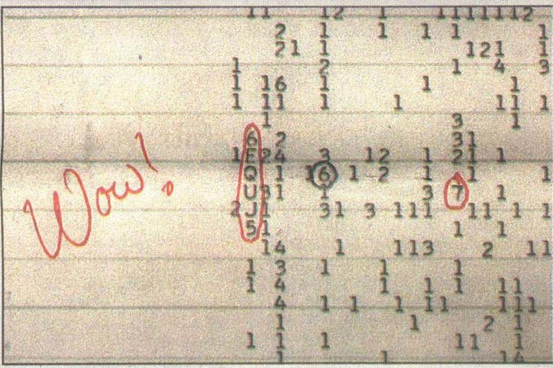

A Louviers (Eure), 2 personnes à l'extérieur de leur
domicile observent une lueur jaune-orangée de forte intensité se déplacer lentement, s'immobiliser. Les témoins
aperçoivent alors un court instant 2 petites lueurs rouges avant que la lueur ne continue son trajet. Durant les 3
mn d'observation aucun bruit n'est entendu GEPAN : PAN classé C.
A Saint Bonnet (Alpes-de-Haute Provence), plusieurs
personnnes observent 1 point lumineux particulier au sommet d'une colline puis ils voient apparaître progressivement
un grand triangle de couleur orange vif. Vu en totalité l'objet a la forme d'un cône et semble avancer vers eux.
Pris de peur les témoins partent en voiture. Le phénomène disparaîtra caché par une haie d'arbres. Revenus sur les
lieux un peu plus tard avec d'autres personnes, ils n'ont plus rien observé. Sur les lieux indiqués par les témoins,
aucune trace au sol n'a été constatée par la gendarmerie et aucun autre témoignage n'a été recueilli auprés de la
population locale La première page du procés verbal de déposition du premier témoin est manquante dans les archivesGEPAN: PAN classé C.
L'enregistrement du signal "WOW"

A Erstein (Bas Rhin), 2 personnes voient un phénomène
très brillant et immobile dans le ciel. Observé aux jumelles, il a des sphères émettant une lumière jaune à sa base
et une sorte de gyrophare rouge qui clignote. Il se déplace ensuite lentement sans qu'aucun bruit ne soit entendu
avant de disparaître. Suite à un article dans la presse locale indiquant qu'un témoin aurait aperçu dans le ciel un
ovni, la gendarmerie procèdera à la recherche d'autres témoins éventuels Ces témoins ont probablement observé le passage d'un aéronef de type hélicoptèreGEPAN : PAN classé B.
1er vol atmosphérique de la navette américaine Enterprise à partir d'un Boeing 747.
A Montfort-sur-Risles (Eure), un témoin observe dans
le ciel une forme allongée peu épaisse, immobile et très lumineuse. Ce phénomène disparaît à très grande vitesse
en direction du sud-ouest au bout de quelques s GEPAN : PAN classé C.
A Louviers (Eure), un des témoins du 6 observe toujours
depuis son domicile 1 objet ovoïde posé dans un champ de l'autre côté de la rivière qui borde sa propriété. L'objet
lumineux est stationné au sol et aucun bruit n'est entendu durant la dizaine de minutes d'observation. Aucune trace
ou changement particuliers ne seront remarqués par le propriétaire du champ à l'endroit supposé du stationnement de
l'objet. La gendarmerie constatera 3 trous peu profonds sans pouvoir déterminer avec exactitude l'origine de ces
trous difformes. Des échantillons de terre seront prélevés. La recherche de radioactivité sera négative ainsi que
les vérifications demandées auprés des services de météorologie, génie et station radar proche GEPAN : PAN classé C.
A Chaussin (Jura), 2 personnes voient une boule
lumineuse venant lentement du sud-ouest à faible altitude, s'arrêter quelques secondes et repartir vers le
nord-est à plus grande vitesse. Aucun bruit ne sera entendu durant l'observation de plusieurs minutes Article dans la presse locale < témoignages des 2 personnes auprès de la gendarmerie < GEPAN : PAN classé C.
La "grande oreille" de l'observatoire radio de l'Université d'Ohio à Columbus,
pointé vers la constellation du Sagittaire, capte le signal "WOW", un pic de voltage d'une durée de 37 s, d'une
amplitude 30 fois supérieure au bruit de fond Toutes les écoutes postérieures dans cette même direction n'ont plus rien donné.
En forêt de Fontainebleau, A. R. et B. T. (de Paris), un couple d'automobilistes en
stationnement, voit un engin discoïdal tournant sur lui-même, à une altitude estimée à 250 m, qui apparaît larguer
un autre engin de petite taille Nostra n° 283, 7 au 13 septembre 1977.
Lancement de la sonde américaine Voyager 2, à destination des 4 planètes géantes.
A Nancy (Meurthe-et-Moselle), plusieurs personnes
observent entre 2 arbres un phénomène lumineux immobile et silencieux, y compris aux jumelles, avant qu'il
disparaisse brusquement GEPAN : PAN classé C.